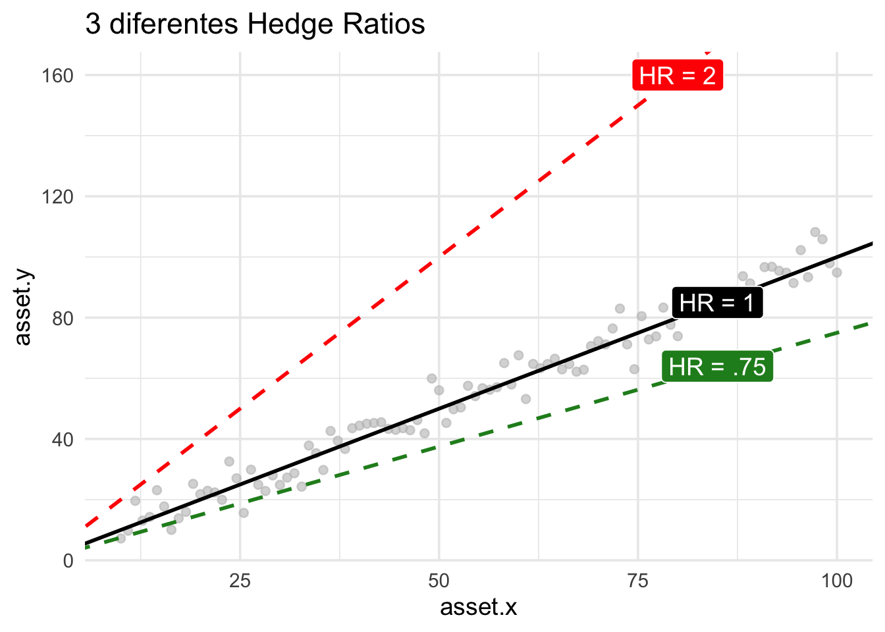

Neste notebook, embarcaremos em uma jornada estatística para entender como ativos financeiros se movem em conjunto. Começaremos com medidas simples de associação e progrediremos até o conceito avançado de cointegração, fundamental para estratégias de pairs trading.
1. Correlação de Pearson: A Medida da “Amizade”
A Correlação de Pearson é uma das formas mais comuns de quantificar a relação linear entre dois ativos. Ela nos diz o quão forte e em que direção (positiva ou negativa) dois ativos se movem juntos. Um valor próximo de +1 indica uma forte correlação positiva, -1 uma forte correlação negativa, e 0 nenhuma correlação linear.
NoteLoading objects…
Attaching package: 'dplyr'
The following objects are masked from 'package:stats':
filter, lag
The following objects are masked from 'package:base':
intersect, setdiff, setequal, union
Attaching package: 'arrow'
The following object is masked from 'package:utils':
timestamp
ontology <- DAL_Ontology$new()
ontology healthcheck validation...
23 sectors and 171 assets
indexes updated at 2026-05-05 (IBOV~60%=12) (IBOV~90%=38) (IBOV=79) (SMLL=110)
quantamental <- DAL_Quantamental$new()
quantamental healthcheck validation...
time_series_sample_1 <-sample(ontology$get_b3_index()$IBOV$asset,1)time_series_sample_1_similar_assets <-unique(sample(intersect((ontology$get_similarity_asset_df(time_series_sample_1,n=8) |>filter(relationship=="Within Same Sector"))$asset2,ontology$get_b3_index()$IBOV$asset),3,replace=T))if(length(time_series_sample_1_similar_assets)<2) time_series_sample_1_similar_assets <-c("ITUB4","VALE3")library(tidyverse)
── Attaching core tidyverse packages ──────────────────────── tidyverse 2.0.0 ──
✔ forcats 1.0.1 ✔ readr 2.1.6
✔ ggplot2 4.0.1 ✔ stringr 1.6.0
✔ lubridate 1.9.4 ✔ tibble 3.3.0
✔ purrr 1.2.0
── Conflicts ────────────────────────────────────────── tidyverse_conflicts() ──
✖ lubridate::duration() masks arrow::duration()
✖ dplyr::filter() masks stats::filter()
✖ dplyr::lag() masks stats::lag()
ℹ Use the conflicted package (<http://conflicted.r-lib.org/>) to force all conflicts to become errors
start_time=Sys.time() ; similar_assets_df <- quantamental$assets(c(time_series_sample_1,time_series_sample_1_similar_assets)) |>filter(date>=max(date)-365) ; d <-difftime(Sys.time(), start_time, units ="secs") ; cat(sprintf(paste0("Tempo para carregar os dados de ",paste(c(time_series_sample_1,time_series_sample_1_similar_assets),collapse=" | ")," : %.5f %s"), as.numeric(d), attr(d, "units")))
Tempo para carregar os dados de FLRY3 | HAPV3 | RDOR3 : 0.02974 secs
if(!time_series_sample_1 %in%unique(similar_assets_df$asset)) { time_series_sample_1 <- time_series_sample_1_similar_assets[1] time_series_sample_1_similar_assets <-setdiff(time_series_sample_1_similar_assets,time_series_sample_1)}# similar_assets <- split(similar_assets_df, similar_assets_df$asset)# Convert to wide formatwide_df <- similar_assets_df %>%select(date, asset, close) %>%pivot_wider(names_from = asset,values_from = close )# Names of the two assets# asset1 <- names(wide_df)[2]# asset2 <- names(wide_df)[3]asset1 <- time_series_sample_1asset2 <- time_series_sample_1_similar_assets[1]wide_df |>ggplot(aes(x=.data[["date"]],y=.data[[asset1]]))+geom_line()
A correlação mede apenas a relação linear. Dois ativos podem ter uma forte relação não-linear e apresentar uma correlação de Pearson baixa. Além disso, a correlação não implica causalidade e pode ser enganosa em períodos de crise ou alta volatilidade.
2. Regressão Linear: Encontrando a Proporção de Equilíbrio (Hedge Ratio)
Enquanto a correlação nos diz se os ativos se movem juntos, a Regressão Linear nos ajuda a entender como eles se movem em relação um ao outro. Podemos modelar um ativo como função do outro para encontrar o Hedge Ratio, que é o coeficiente angular da regressão (\(\beta\)). Este coeficiente indica quantas unidades de um ativo são necessárias para “hedgear” uma unidade do outro.

# --- Dados de Exemplo (continuando com os mesmos dados simulados) ---# Realizar a regressão linear: Ativo B ~ Ativo Amodelo_regressao <-lm(ativo_b ~ ativo_a, data = dados_ativos)summary(modelo_regressao)# Extrair o Hedge Ratio (coeficiente do ativo_a)hedge_ratio <-coef(modelo_regressao)["ativo_a"]print(paste("Hedge Ratio (Beta):", round(hedge_ratio, 4)))
Visualização da Reta de Regressão
Esta seção é para o seu plot da reta de regressão linear. Ele deve mostrar a nuvem de pontos dos dois ativos e a linha que melhor os representa, de acordo com o modelo de regressão.
# SEU CÓDIGO PARA PLOTAR A RETA DE REGRESSÃO LINEAR AQUI# Exemplo:# dados_ativos %>%# ggplot(aes(x = ativo_a, y = ativo_b)) +# geom_point(alpha = 0.6) +# geom_smooth(method = "lm", se = FALSE, color = "red") +# labs(# title = "Regressão Linear: Ativo B vs. Ativo A com Hedge Ratio",# x = "Preço Ativo A",# y = "Preço Ativo B"# ) +# theme_minimal()
3. Resíduos e Z-Score: O Desvio do Equilíbrio
Os resíduos da regressão representam a diferença entre o preço observado de um ativo e o preço previsto pelo modelo de regressão. Em outras palavras, eles mostram o quanto o par de ativos se desviou de sua relação histórica. Para padronizar esses desvios, calculamos o Z-Score dos resíduos.
Um Z-Score positivo e alto indica que o ativo modelado está “caro” em relação ao outro (ou o par está esticado para cima), enquanto um Z-Score negativo e baixo sugere que está “barato” (ou o par está esticado para baixo). A ideia de Retorno à Média (Mean Reversion) é que esses desvios tendem a se corrigir ao longo do tempo.
# --- Dados de Exemplo (continuando) ---# Calcular os resíduos do modelo de regressãodados_ativos$residuos <-residuals(modelo_regressao)# Calcular o Z-Score dos resíduosdados_ativos$z_score <-scale(dados_ativos$residuos)# Visualizar os primeiros e últimos Z-Scoreshead(dados_ativos$z_score)tail(dados_ativos$z_score)
Visualização do Z-Score dos Resíduos ao Longo do Tempo
Esta seção é para o seu plot do Z-Score dos resíduos. Ele deve mostrar a evolução do Z-Score, idealmente com linhas indicando os limites de desvio (ex: +/- 1 ou 2 desvios padrão) para identificar pontos de entrada/saída em estratégias de pairs trading.
# SEU CÓDIGO PARA PLOTAR O Z-SCORE DOS RESÍDUOS AO LONGO DO TEMPO AQUI# Exemplo:# dados_ativos %>%# ggplot(aes(x = data, y = z_score)) +# geom_line(color = "blue") +# geom_hline(yintercept = 0, linetype = "dashed", color = "gray") +# geom_hline(yintercept = c(-1.5, 1.5), linetype = "dotted", color = "red") +# labs(# title = "Z-Score dos Resíduos (Desvio do Equilíbrio)",# x = "Data",# y = "Z-Score"# ) +# theme_minimal()
4. Cointegração: O Equilíbrio de Longo Prazo (Engle-Granger)
Finalmente, chegamos à Cointegração. Dois ativos são cointegrados se eles não são estacionários individualmente (ou seja, seus preços tendem a “andar sem rumo”), mas uma combinação linear deles (o spread gerado pela regressão) é estacionária. Isso significa que, apesar de flutuações de curto prazo, eles mantêm uma relação de equilíbrio de longo prazo.
O teste de Engle-Granger é um método comum para verificar a cointegração. Ele envolve: 1. Realizar a regressão linear de um ativo sobre o outro para obter os resíduos. 2. Testar se esses resíduos são estacionários (geralmente usando um teste de Dickey-Fuller Aumentado - ADF).
Se os resíduos forem estacionários, o par é considerado cointegrado, e o spread (os resíduos) tende a retornar à sua média.
# --- Dados de Exemplo (continuando) ---# Instalar e carregar o pacote para teste de cointegração (se necessário)# install.packages("tseries") # Contém adf.testlibrary(tseries)# Teste de estacionariedade dos resíduos (Teste ADF)adf_test_result <-adf.test(dados_ativos$residuos, alternative ="stationary")print(adf_test_result)# Interpretação:# Se o p-value for baixo (ex: < 0.05), rejeitamos a hipótese nula de não-estacionariedade,# indicando que os resíduos são estacionários e o par é cointegrado.if (adf_test_result$p.value <0.05) {print("Os resíduos são estacionários: o par Ativo A e Ativo B é cointegrado.")} else {print("Os resíduos NÃO são estacionários: o par Ativo A e Ativo B NÃO é cointegrado.")}
Note A Importância da Cointegração
Para estratégias de pairs trading, a cointegração é crucial. Ela garante que, quando o spread entre dois ativos se desvia de sua média, há uma força econômica subjacente que tende a puxá-lo de volta. Sem cointegração, um spread pode se afastar indefinidamente, transformando uma estratégia de mean reversion em uma aposta direcional.
Próximos Passos
Seus Plots: Insira seus gráficos de regressão e Z-Score nos locais indicados.
Dados Reais: Substitua os dados simulados por dados reais de pares de ativos da sua ontologia.
Cointegração Dinâmica: Explore o Filtro de Kalman para estimar o Hedge Ratio dinamicamente, como discutido no mapa da jornada.
Backtesting: Desenvolva uma estratégia de pairs trading baseada nos sinais de Z-Score e realize um backtest para avaliar sua performance histórica.